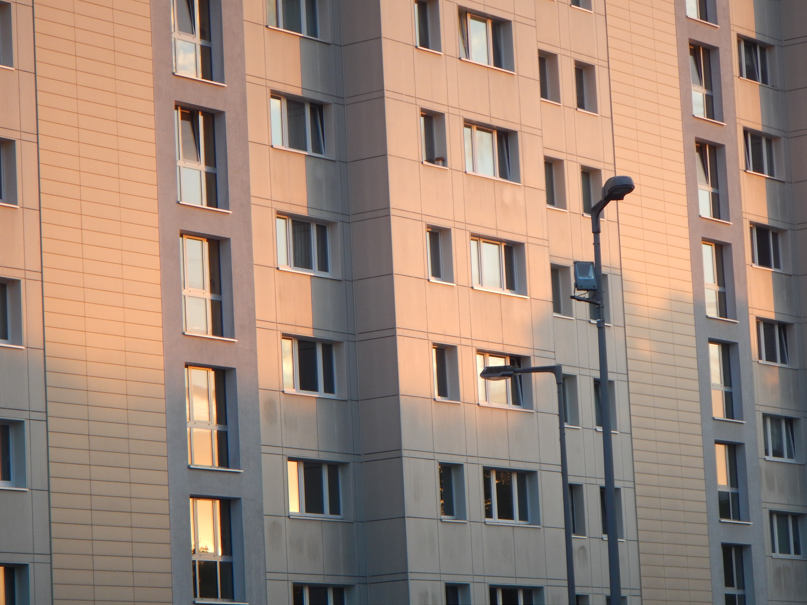
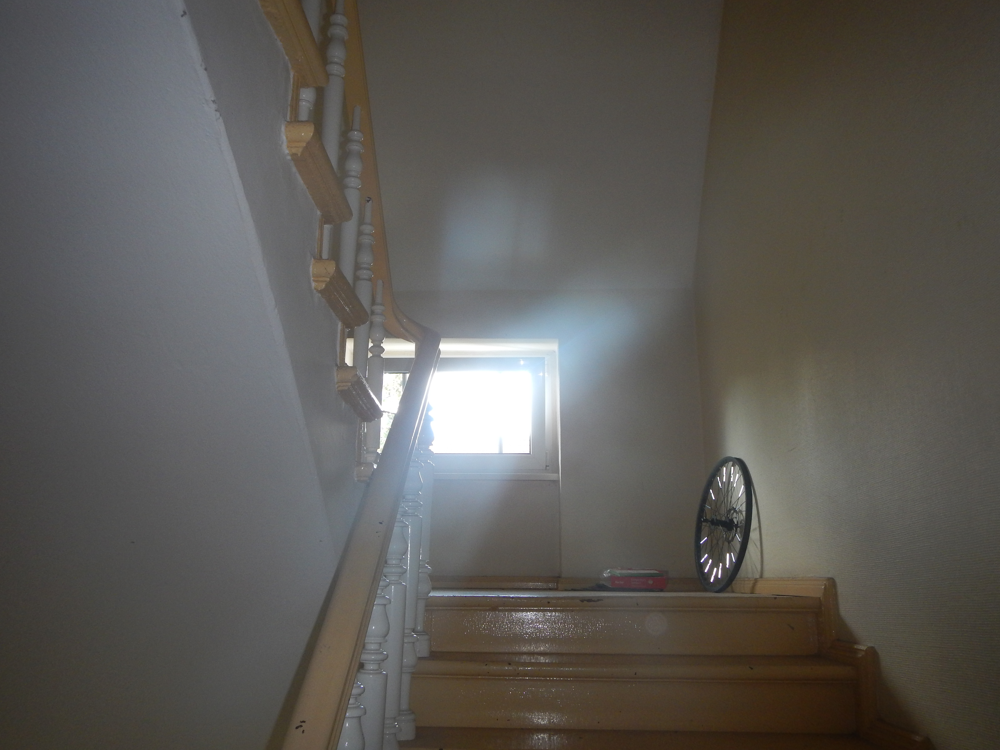

Bett im Stil der Epoche
I wonder if it's about acting, pretending, as if learning a language, surrounding myself with the things I need, to use to see, to pull into me.
I feel a rush of relief,
three silver stars holding his hair, a flash
of pink in the dark theater from either his pants or his shirt,
someone I know sits down a row in front of me.


- use of language inherently contains stories which still reach into ancient texts, 'acre' remains biblical
- 'sophistication' - what adds credibility? previously spiritual elements and now mathematics, reproducibility
- with reproducibility of a figure, thought and bias become more 'baked in' -- no longer interrogated
- desire for things to be controlled and happen over and over, desire for control and 'endless reproduction'
- importance of mirroring and reflecting our experience out, our choice to live under queens, we reflect our family structure
back into our lives, what animals do this?
-
Milk
-
Eggs
I slowly forgot you. I went instead to the harbor and watched ships moving and landing, I did this when I thought of you and someday I forgot
to think of you; of your body lying on the bed, of what I saw with you, of the sun coming over the hillside and us talking outside the bakery, located now
nowhere. I have nothing to offer, I am not good with puzzles and combinations, I am not good with eating, sleeping, or speaking. I should not be listened to
as I am not often happy. Have I ever seen something beautiful?
|